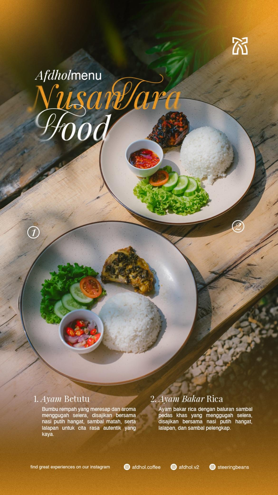
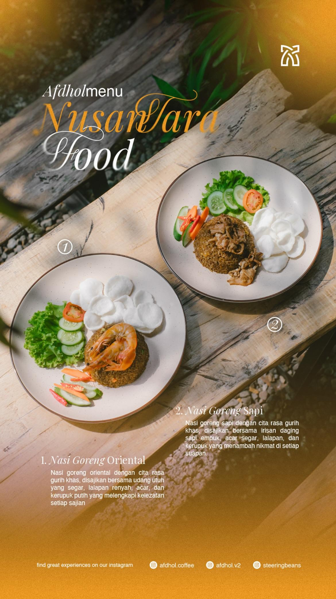
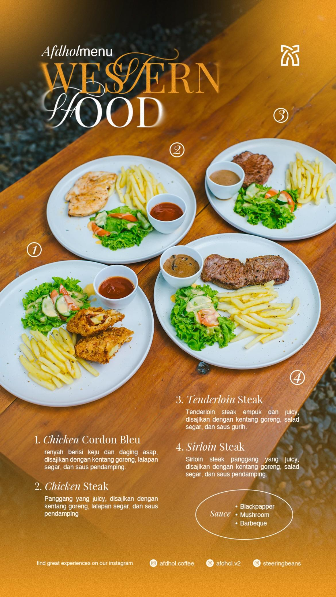
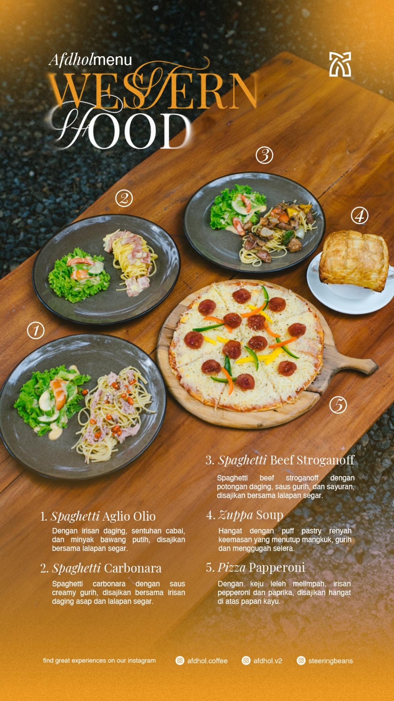
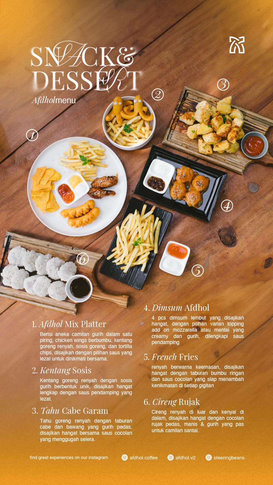
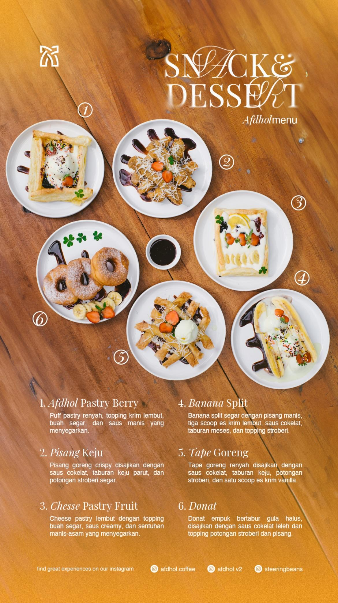

Home / Coffee Menu
Our Menu
Dari hidangan Nusantara, western, hingga camilan dan kopi untuk menemani harimu.
Afdhol Menu
Nusantara Food
Ayam Bakar Rica
Ayam bakar rica dengan baluran sambal pedas khas yang menggugah selera, disajikan bersama nasi putih hangat, lalapan, dan sambal pelengkap.
Nasi Goreng Oriental
Nasi goreng oriental dengan cita rasa gurih khas, disajikan bersama udang utuh yang segar, lalapan renyah, acar, dan kerupuk putih.
Nasi Goreng Sapi
Nasi goreng sapi dengan cita rasa gurih khas, disajikan bersama irisan daging sapi empuk, acar segar, lalapan, dan kerupuk.
Sop Iga
Sop iga dengan kuah bening hangat dan daging iga empuk, disajikan bersama nasi putih, kerupuk, sambal, dan lalapan segar.
Iga Bakar Rica
Iga bakar rica dengan daging empuk berbalut sambal pedas, disajikan bersama nasi putih hangat, lalapan segar, dan sambal pendamping.



Afdhol Menu
Western Food
Chicken Cordon Bleu
Renyah berisi keju dan daging asap, disajikan dengan kentang goreng, lalapan segar, dan saus pendamping.
Chicken Steak
Panggang yang juicy, disajikan dengan kentang goreng, lalapan segar, dan saus pendamping.
Tenderloin Steak
Tenderloin steak empuk dan juicy, disajikan dengan kentang goreng, salad segar, dan saus gurih.
Sirloin Steak
Sirloin steak panggang yang juicy, disajikan dengan kentang goreng, salad segar, dan saus pendamping.
Spaghetti Aglio Olio
Dengan irisan daging, sentuhan cabai, dan minyak bawang putih, disajikan bersama lalapan segar.
Spaghetti Carbonara
Spaghetti carbonara dengan saus creamy gurih, disajikan bersama irisan daging asap dan lalapan segar.
Spaghetti Beef Stroganoff
Spaghetti beef stroganoff dengan potongan daging, saus gurih, dan sayuran, disajikan bersama lalapan segar.
Zuppa Soup
Hangat dengan puff pastry renyah keemasan yang menutup mangkuk, gurih dan menggugah selera.
Pizza Pepperoni
Dengan keju leleh melimpah, irisan pepperoni dan paprika, disajikan hangat di atas papan kayu.
Pilihan saus steak: Blackpepper, Mushroom, Barbeque


Afdhol Menu
Snack & Dessert
Snack
Afdhol Mix Platter
Berisi aneka camilan gurih dalam satu piring, chicken wings berbumbu, kentang goreng renyah, sosis goreng, dan tortilla chips, disajikan dengan pilihan saus yang lezat untuk dinikmati bersama.
Kentang Sosis
Kentang goreng renyah dengan sosis gurih berbentuk unik, disajikan hangat lengkap dengan saus pendamping yang lezat.
Tahu Cabe Garam
Tahu goreng renyah dengan taburan cabe dan bawang yang gurih pedas, disajikan hangat bersama saus cocolan yang menggugah selera.
Dimsum Afdhol
4 pcs dimsum lembut yang disajikan hangat, dengan pilihan varian topping add on mozzarella atau mentai yang creamy dan gurih, dilengkapi saus pendamping.
French Fries
Renyah berwarna keemasan, disajikan hangat dengan taburan bumbu ringan dan saus cocolan yang siap menambah kenikmatan di setiap gigitan.
Cireng Rujak
Cireng renyah di luar dan kenyal di dalam, disajikan hangat dengan cocolan rujak pedas, manis & gurih yang pas untuk camilan santai.
Dessert
Afdhol Pastry Berry
Puff pastry renyah, topping krim lembut, buah segar, dan saus manis yang menyegarkan.
Pisang Keju
Pisang goreng crispy disajikan dengan saus cokelat, taburan keju parut, dan potongan stroberi segar.
Cheese Pastry Fruit
Cheese pastry lembut dengan topping buah segar, saus creamy, dan sentuhan manis-asam yang menyegarkan.
Banana Split
Banana split segar dengan pisang manis, tiga scoop es krim lembut, saus cokelat, taburan meses, dan topping stroberi.
Tape Goreng
Tape goreng renyah disajikan dengan saus cokelat, taburan keju, potongan stroberi, dan satu scoop es krim vanilla.
Donat
Donat empuk bertabur gula halus, disajikan dengan saus cokelat leleh dan topping potongan stroberi dan pisang.


Afdhol Menu
Coffee
Butterscotch Coffee
Creamy dengan lapisan foam lembut dan taburan butterscotch di atasnya, disajikan dingin dan menyegarkan.
Menu minuman kopi lainnya bisa ditanyakan langsung ke kami lewat halaman Contact.

Ingin Membawa Pulang Kopinya?
Lihat kopi kemasan dan biji kopi pilihan Afdhol di Coffee Store.